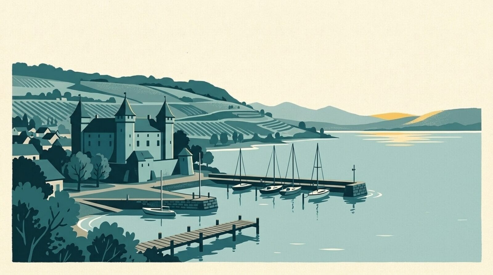

In short
Between Mies and Buchillon, via Coppet, Nyon, Rolle and Gland, My Lake follows 10 beaches on La Côte in Vaud. The page gives the morning water temperature, places by the water and rental operators.
These are the La Côte beaches followed by the app, from Mies on the Geneva side to Buchillon.
The beaches
Water temperature on the morning of 22 November 2026, from the Alplakes model: 6.3 °C to 9.5 °C depending on the beach. It changes every day.
- Mies (6.3 °C)
- Coppet (6.4 °C)
- Nyon (7.8 °C)
- Prangins (8.3 °C)
- Gland (8.5 °C)
- Dully (8.7 °C)
- Rolle (9.0 °C)
- Perroy (9.0 °C)
- Allaman (9.5 °C)
- Buchillon (9.4 °C)
Where to have a drink or eat by the water
- Hôtel du Lac, Coppet: Terrace with a lake view, between Geneva and Nyon.
- Le Casino, Rolle: Shaded terrace on the lakeside promenade and a bright veranda. Closed Mondays, and also Sunday evenings out of season.
- O’Les Terrasses du Lac, Nyon: Rue de Rive, three spaces and a terrace facing the lake and the Alps, from morning coffee to the last drink.
- Restaurant de la Plage, Nyon: Lake fish and regional dishes by the water, Sunday brunch.
Renting on the water or warming up in a sauna
Each entry links to the operator’s own website when there is one. Hours and prices change: check with them.
- SUP Club Nyon, Nyon, near Nyon: Lakeside paddle club on Rue de Rive.
- Léman Kayak, Allaman (March to October), near Allaman: Kayak trips between Allaman, Nyon and Morges, guided or self-guided.
- Sauna des Bains des Trois Jetées, Nyon (October to March), near Nyon: Lakeside community sauna, open to the public from 12 October 2026 to 30 March 2027 without booking: Monday, Tuesday and Thursday 6–9pm, weekends noon–6pm (Saturday noon–2pm women only). CHF 12; private sessions for CHF 350 on Friday evenings or weekend mornings 7–9.30am.
- SaunaRolle, Rolle (October to March), near Rolle: Volunteer-run community sauna at the campsite, Chemin de la Plage 4: tipi to change in, hot tea, lake dip. CHF 12 a session.
Before you dive in: check the water quality. In winter: winter swimming on Lake Geneva. The current wind and water are in the My Lake app.
Lake Geneva’s water right now
Each beach’s water temperature is in the My Lake app, updated every three hours.